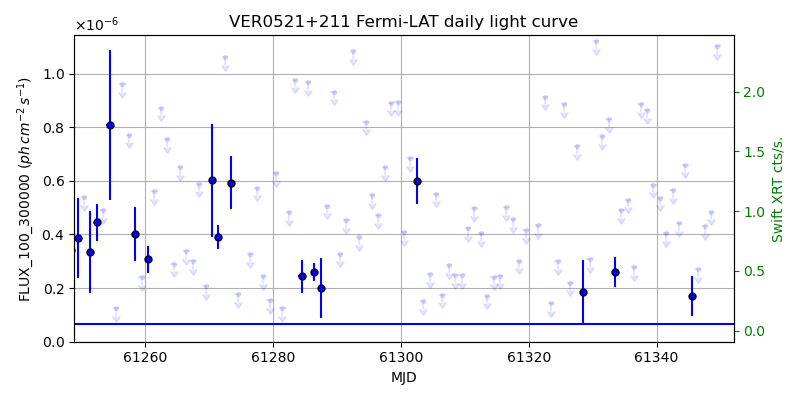
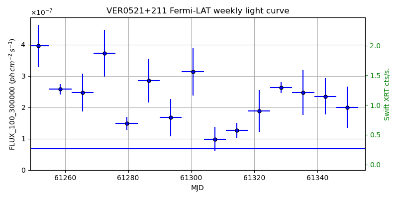
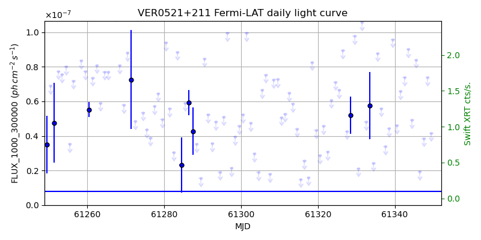
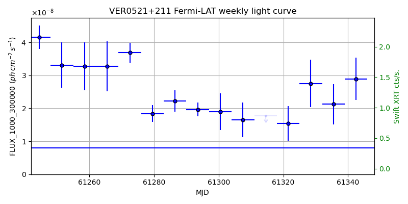

LAT Lightcurve site: https://fermi.gsfc.nasa.gov/ssc/data/access/lat/msl_lc/source/VER_0521p211
Swift site: https://www.swift.psu.edu/monitoring/source.php?source=VERJ0521+212
NED: Query
Time of last update of this page: UT: 2026-11-06 16:16 (MJD: 61350.678)
| Property | Value |
|---|---|
| R.A. | 5:21:46.08 |
| Dec. | 21:12:50.4 |
| z | 0.108 |
| 3FGL SpectrumType | PowerLaw |
| 3FGL PL Index | 1.92 |
| 3FGL Flux_100_300000 | 6.73e-08 1 / (s cm2) |
| 3FGL Flux_1000_300000 | 8.00e-09 1 / (s cm2) |
| 3FGL Flux >200 GeV | 5.96e-11 1 / (s cm2) |
| 3FGL Extrap. Crab >200 GeV | 0.25 |
| 3FGL Flux After EBL Absorption >200GeV | 3.54e-11 1 / (s cm2) |
| 3FGL EBL Crab Fraction >200GeV | 0.15 |

| MJD | dMJD | Flux | dFlux | Frac3FGL | FracCrab>200GeV | EBLFracCrab>200GeV |
|---|---|---|---|---|---|---|
| 61345.50 | 0.50 | 1.70e-07 | 7.38e-08 | 2.53 | 0.64 | 0.38 |
| 61346.50 | 0.50 | 2.72e-07 | 0.00e+00 | 0.00 | 0.00 | 0.00 |
| 61347.50 | 0.50 | 4.30e-07 | 0.00e+00 | 0.00 | 0.00 | 0.00 |
| 61348.50 | 0.50 | 4.85e-07 | 0.00e+00 | 0.00 | 0.00 | 0.00 |
| 61349.50 | 0.50 | 1.10e-06 | 0.00e+00 | 0.00 | 0.00 | 0.00 |

| MJD | dMJD | Flux | dFlux | Frac3FGL | FracCrab>200GeV | EBLFracCrab>200GeV |
|---|---|---|---|---|---|---|
| 61314.50 | 3.50 | 1.26e-07 | 2.38e-08 | 1.88 | 0.48 | 0.28 |
| 61321.50 | 3.50 | 1.88e-07 | 6.64e-08 | 2.79 | 0.71 | 0.42 |
| 61328.50 | 3.50 | 2.63e-07 | 1.69e-08 | 3.90 | 0.99 | 0.59 |
| 61335.50 | 3.50 | 2.47e-07 | 7.17e-08 | 3.67 | 0.94 | 0.56 |
| 61342.50 | 3.50 | 2.35e-07 | 5.81e-08 | 3.49 | 0.89 | 0.53 |

| MJD | dMJD | Flux | dFlux | Frac3FGL | FracCrab>200GeV | EBLFracCrab>200GeV |
|---|---|---|---|---|---|---|
| 61345.50 | 0.50 | 8.41e-08 | 0.00e+00 | 0.00 | 0.00 | 0.00 |
| 61346.50 | 0.50 | 1.94e-08 | 0.00e+00 | 0.00 | 0.00 | 0.00 |
| 61347.50 | 0.50 | 3.86e-08 | 0.00e+00 | 0.00 | 0.00 | 0.00 |
| 61348.50 | 0.50 | 7.39e-08 | 0.00e+00 | 0.00 | 0.00 | 0.00 |
| 61349.50 | 0.50 | 4.17e-08 | 0.00e+00 | 0.00 | 0.00 | 0.00 |

| MJD | dMJD | Flux | dFlux | Frac3FGL | FracCrab>200GeV | EBLFracCrab>200GeV |
|---|---|---|---|---|---|---|
| 61314.50 | 3.50 | 1.78e-08 | 0.00e+00 | 0.00 | 0.00 | 0.00 |
| 61321.50 | 3.50 | 1.54e-08 | 5.24e-09 | 1.92 | 0.49 | 0.29 |
| 61328.50 | 3.50 | 2.75e-08 | 7.19e-09 | 3.44 | 0.88 | 0.52 |
| 61335.50 | 3.50 | 2.13e-08 | 6.11e-09 | 2.66 | 0.68 | 0.40 |
| 61342.50 | 3.50 | 2.89e-08 | 6.39e-09 | 3.61 | 0.92 | 0.55 |
--------------------------------------------------------- Using user-supplied coords: 5:21:46.08 21:12:50.4 2000 --------------------------------------------------------- FLWO UT night of: 2026-11-07 Local Sid. @ Midnight: 02:42 Sunset (-15.0) (local, UT): 18:39 01:39 Sunrise (-15.0) (local, UT): 05:36 12:36 Moonrise (local, UT): 05:16 12:16 Moonset (local, UT): Moon phase: 0.04 --------------------------------------------------------- AzTime LSID UT Obj_el Obj_az Mn_el Mn_az Sep. --------------------------------------------------------- 18:39 21:20 01:39 -12.5 55.1 -35.5 278.9 116.7 19:09 21:50 02:09 -7.0 59.6 -41.6 283.5 117.0 19:39 22:20 02:39 -0.7 63.8 -47.5 288.8 117.3 20:09 22:50 03:09 4.6 67.7 -53.3 295.3 117.6 20:39 23:20 03:39 10.5 71.4 -58.7 303.4 118.0 21:09 23:50 04:09 16.6 74.9 -63.5 313.9 118.3 21:39 00:20 04:39 22.8 78.3 -67.5 328.0 118.7 22:09 00:50 05:09 29.1 81.7 -70.0 346.2 119.0 22:39 01:20 05:39 35.4 85.2 -70.5 6.9 119.4 23:09 01:51 06:09 41.8 88.9 -68.8 26.6 119.7 23:39 02:21 06:39 48.2 92.9 -65.4 42.5 120.1 00:09 02:51 07:09 54.6 97.6 -60.9 54.4 120.5 00:39 03:21 07:39 60.9 103.4 -55.8 63.5 120.8 01:09 03:51 08:09 67.0 111.3 -50.2 70.6 121.1 01:39 04:21 08:39 72.7 123.3 -44.4 76.4 121.5 02:09 04:51 09:09 77.4 143.8 -38.4 81.4 121.8 02:39 05:21 09:39 79.6 177.7 -32.4 85.8 122.1 03:09 05:51 10:09 77.8 212.9 -26.3 89.9 122.4 03:39 06:21 10:39 73.3 234.8 -20.2 93.7 122.7 04:09 06:51 11:09 67.7 247.5 -14.2 97.5 123.0 04:39 07:21 11:39 61.6 255.7 -8.1 101.2 123.3 05:09 07:52 12:09 55.3 261.7 -1.2 105.0 123.6 05:36 08:19 12:36 49.6 266.1 3.4 108.6 123.8 --------------------------------------------------------- Dark hours >55 deg.: 4.99 srcstart (UT): 2026-11-07 07:10 srcend (UT): 2026-11-07 12:10